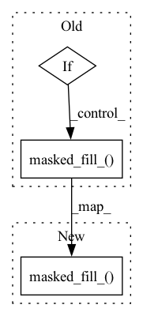

Pattern ID :10169
Before Change
def step(self, step_prob):
// step_prob [batch_size, beam_size, vocab_size]
if self.continue_mask.sum() == 0:
return None
else:
step_prob, step_prob_indice = t.topk(step_prob, self.beam_size)
step_prob.masked_fill_( ~self.continue_mask.unsqueeze(-1), -1e10)
// [batch_size, beam_size, beam_size]
self.token_container = self.token_container.unsqueeze(-2).repeat(1, 1, self.beam_size, 1)
// [batch_size, beam_size, beam_size, seqlength]After Change
// step_prob [batch_size, beam_size, vocab_size]
step_prob, step_prob_indice = t.topk(step_prob, self.beam_size)
step_prob.masked_fill_( ~self.continue_mask.unsqueeze(-1), -1e10)
// [batch_size, beam_size, beam_size]
self.token_container = self.token_container.unsqueeze(-2).repeat(1, 1, self.beam_size, 1)
// [batch_size, beam_size, beam_size, seqlength]In pattern: SUPERPATTERN
Frequency: 5
Non-data size: 3
Instances Fragment ID: 35953252
Project Name: tongjinle123/speech-transformer-pytorch_lightning
Commit Name: 8ebc016eff7aa90692638c0f5ccf672b375769d9
Time: 2020-02-23
Author: lancertong@live.com
File Name: src/model/modules/beam_searcher.py
M Class Name: BeamSteper
N Class Name: BeamSteper
M Method Name: step(2)
N Method Name: step(2)
M Parent Class:
N Parent Class:
M File Name: src/model/modules/beam_searcher.py
N File Name: src/model/modules/beam_searcher.py
M Start Line: 61
M End Line: 93
N Start Line: 62
N End Line: 94
Before Change
out = self.transformer(tokens, mask = mask)
logits = self.to_logits(out)
if not return_loss:
seq_len = tokens.shape[1]
mask = self.logits_mask[:, :seq_len]
max_neg_value = -torch.finfo(logits.dtype).max
logits.masked_fill_( mask, max_neg_value)
return logits
assert exists(image), "when training, image must be supplied"
After Change
// mask logits to make sure text predicts text (except last token), and image predicts image
mask = self.logits_mask[:, :seq_len]
max_neg_value = -torch.finfo(logits.dtype).max
logits.masked_fill_( mask, max_neg_value)
if not return_loss:
return logits
Fragment ID: 35953253
Project Name: lucidrains/dalle-pytorch
Commit Name: 031e3be7a34be96596b249922d8e8172b9473225
Time: 2021-01-07
Author: lucidrains@gmail.com
File Name: dalle_pytorch/dalle_pytorch.py
M Class Name: DALLE
N Class Name: DALLE
M Method Name: forward(5)
N Method Name: forward(5)
M Parent Class: nn.Module
N Parent Class: nn.Module
M File Name: dalle_pytorch/dalle_pytorch.py
N File Name: dalle_pytorch/dalle_pytorch.py
M Start Line: 308
M End Line: 325
N Start Line: 300
N End Line: 330
Before Change
smooth_loss = -lprobs.sum(dim=-1, keepdim=True)
if ignore_index is not None:
pad_mask = target.eq(ignore_index)
if pad_mask.any():
nll_loss.masked_fill_( pad_mask, 0.)
smooth_loss.masked_fill_(pad_mask, 0.)
else:
nll_loss = nll_loss.squeeze(-1)
smooth_loss = smooth_loss.squeeze(-1)After Change
smooth_loss = -lprobs.sum(dim=-1, keepdim=True)
if ignore_index is not None:
pad_mask = target.eq(ignore_index)
nll_loss.masked_fill_( pad_mask, 0.)
smooth_loss.masked_fill_(pad_mask, 0.)
else:
nll_loss = nll_loss.squeeze(-1)
smooth_loss = smooth_loss.squeeze(-1) Fragment ID: 35953248
Project Name: mohammadkhalifa/fairseq-tagging
Commit Name: 5028ed1b6bedd526dee27ea731284f43e87303f0
Time: 2020-03-11
Author: myleott@fb.com
File Name: fairseq/criterions/label_smoothed_cross_entropy.py
M Class Name: AnonimousClass
N Class Name: AnonimousClass
M Method Name: label_smoothed_nll_loss(5)
N Method Name: label_smoothed_nll_loss(5)
M Parent Class:
N Parent Class:
M File Name: fairseq/criterions/label_smoothed_cross_entropy.py
N File Name: fairseq/criterions/label_smoothed_cross_entropy.py
M Start Line: 18
M End Line: 22
N Start Line: 19
N End Line: 20
Before Change
fill_value = 2. if improved else 1.
if isinstance(edge_index, SparseTensor):
adj_t = edge_index
if not adj_t.has_value():
adj_t = adj_t.fill_value(1., dtype=dtype)
if add_self_loops:
adj_t = fill_diag(adj_t, fill_value)
deg = sparsesum(adj_t, dim=1)
deg_inv_sqrt = deg.pow_(-0.5)
deg_inv_sqrt.masked_fill_(deg_inv_sqrt == float("inf"), 0.)
adj_t = mul(adj_t, deg_inv_sqrt.view(-1, 1))
adj_t = mul(adj_t, deg_inv_sqrt.view(1, -1))
return adj_t
else:
num_nodes = maybe_num_nodes(edge_index, num_nodes)
if edge_weight is None:
edge_weight = torch.ones((edge_index.size(1), ), dtype=dtype,
device=edge_index.device)
if add_self_loops:
edge_index, tmp_edge_weight = add_remaining_self_loops(
edge_index, edge_weight, fill_value, num_nodes)
assert tmp_edge_weight is not None
edge_weight = tmp_edge_weight
row, col = edge_index[0], edge_index[1]
deg = scatter_add(edge_weight, col, dim=0, dim_size=num_nodes)
deg_inv_sqrt = deg.pow_(-0.5)
deg_inv_sqrt.masked_fill_( deg_inv_sqrt == float("inf"), 0)
return edge_index, deg_inv_sqrt[row] * edge_weight * deg_inv_sqrt[col]
class GCNConv_Fixed_W(MessagePassing):After Change
row, col = edge_index[0], edge_index[1]
deg = scatter_add(edge_weight, col, dim=0, dim_size=num_nodes)
deg_inv_sqrt = deg.pow_(-0.5)
deg_inv_sqrt.masked_fill_( deg_inv_sqrt == float("inf"), 0)
return edge_index, deg_inv_sqrt[row] * edge_weight * deg_inv_sqrt[col]
class GCNConv_Fixed_W(MessagePassing): Fragment ID: 35953243
Project Name: benedekrozemberczki/pytorch_geometric_temporal
Commit Name: 7a0c892a42dcabb334f3d841e2fd4a2306feea96
Time: 2021-09-06
Author: He_YX@outlook.com
File Name: torch_geometric_temporal/nn/recurrent/evolvegcno.py
M Class Name: AnonimousClass
N Class Name: AnonimousClass
M Method Name: gcn_norm(6)
N Method Name: gcn_norm(6)
M Parent Class:
N Parent Class:
M File Name: torch_geometric_temporal/nn/recurrent/evolvegcno.py
N File Name: torch_geometric_temporal/nn/recurrent/evolvegcno.py
M Start Line: 34
M End Line: 68
N Start Line: 36
N End Line: 52